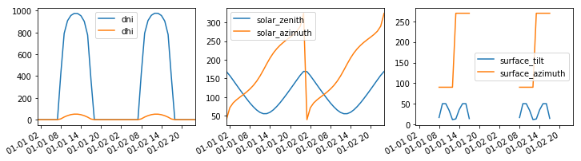
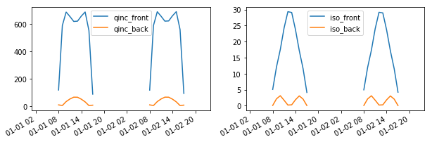
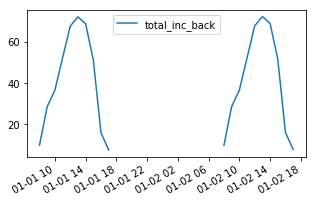

Run timeseries simulations in parallel¶
In this section, we will learn how to:
- run timeseries simulations in parallel using the
run_parallel_engine()function
Note: for a better understanding, it might help to read the previous tutorial section on running timeseries simulations beforehand
Imports and settings
In [1]:
# Import external libraries
import numpy as np
import matplotlib.pyplot as plt
from datetime import datetime
import pandas as pd
# Settings
% matplotlib inline
np.set_printoptions(precision=3, linewidth=300)
# Paths
LOCAL_DIR = os.getcwd()
DATA_DIR = os.path.join(LOCAL_DIR, 'data')
filepath = os.path.join(DATA_DIR, 'test_df_inputs_MET_clearsky_tucson.csv')
Get timeseries inputs¶
In [2]:
def export_data(fp):
tz = 'US/Arizona'
df = pd.read_csv(fp, index_col=0)
df.index = pd.DatetimeIndex(df.index).tz_localize('UTC').tz_convert(tz)
return df
df = export_data(filepath)
df_inputs = df.iloc[:48, :]
In [3]:
# Plot the data
f, (ax1, ax2, ax3) = plt.subplots(1, 3, figsize=(12, 3))
df_inputs[['dni', 'dhi']].plot(ax=ax1)
df_inputs[['solar_zenith', 'solar_azimuth']].plot(ax=ax2)
df_inputs[['surface_tilt', 'surface_azimuth']].plot(ax=ax3)
plt.show()

In [4]:
# Use a fixed albedo
albedo = 0.2
Prepare PV array parameters¶
In [5]:
pvarray_parameters = {
'n_pvrows': 3, # number of pv rows
'pvrow_height': 1, # height of pvrows (measured at center / torque tube)
'pvrow_width': 1, # width of pvrows
'axis_azimuth': 0., # azimuth angle of rotation axis
'gcr': 0.4, # ground coverage ratio
'rho_front_pvrow': 0.01, # pv row front surface reflectivity
'rho_back_pvrow': 0.03 # pv row back surface reflectivity
}
Run simulations in parallel with run_parallel_engine()¶
Running timeseries simulations in parallel is done using the
run_parallel_engine().In the previous tutorial section on running timeseries simulations, we
showed that a function needed to be passed in order to build a report
out of the timeseries simulation.
For the parallel mode, it will not be very different but we will need
to pass a class (or an object) instead. The reason is that python
multiprocessing uses pickling to run different processes, but python
functions cannot be pickled, so a class or an object with the
necessary methods needs to be passed instead in order to build a
report.
An example of a report building class is provided in the report.py
module of the pvfactors package.
In [6]:
# Choose the number of workers
n_processes = 3
In [7]:
# import function to run simulations in parallel
from pvfactors.run import run_parallel_engine
# import the report building class for the simulation run
from pvfactors.report import ExampleReportBuilder
# run simulations in parallel mode
report = run_parallel_engine(ExampleReportBuilder, pvarray_parameters, df_inputs.index,
df_inputs.dni, df_inputs.dhi,
df_inputs.solar_zenith, df_inputs.solar_azimuth,
df_inputs.surface_tilt, df_inputs.surface_azimuth,
albedo, n_processes=n_processes)
# make a dataframe out of the report
df_report = pd.DataFrame(report, index=df_inputs.index)
df_report.iloc[6:11, :]
100%|██████████| 16/16 [00:00<00:00, 69.32it/s]
100%|██████████| 16/16 [00:00<00:00, 37.11it/s]
100%|██████████| 16/16 [00:00<00:00, 37.93it/s]
INFO:pvfactors.run:Parallel calculation elapsed time: 0.500510931015 sec
Out[7]:
| qinc_back | iso_back | qinc_front | iso_front | |
|---|---|---|---|---|
| 2019-01-01 07:00:00-07:00 | NaN | NaN | NaN | NaN |
| 2019-01-01 08:00:00-07:00 | 9.776079 | 0.149276 | 117.701834 | 5.143147 |
| 2019-01-01 09:00:00-07:00 | 5.296923 | 2.492717 | 587.669852 | 12.429886 |
| 2019-01-01 10:00:00-07:00 | 33.478098 | 3.115967 | 685.115436 | 17.516188 |
| 2019-01-01 11:00:00-07:00 | 52.534503 | 1.697046 | 652.526254 | 24.250780 |
In [8]:
f, ax = plt.subplots(1, 2, figsize=(10, 3))
df_report[['qinc_front', 'qinc_back']].plot(ax=ax[0])
df_report[['iso_front', 'iso_back']].plot(ax=ax[1])
plt.show()

The results above are consistent with running the simulations without parallel model (this is also tested in the package).
Building a report for parallel mode¶
For parallel simulations, a class (or object) that builds the
report needs to be specified, otherwise nothing will be returned by
the simulation.
Here is an example of a report building class that will return the
total incident irradiance (
'qinc') on the back surface of the
rightmost PV row. A good way to get started building the reporting
class is to use the example provided in the report.py module of
the pvfactors package.Another important action of the class is to merge the different
reports resulting from the parallel simulations: since the users
decide how the reports are built, the users are also responsible for
specifying how to merge the reports after a parallel run.
The static method that builds the reports needs to be named
build(report, pvarray).And the static method that merges the reports needs to be named
merge(reports).
In [9]:
class NewReportBuilder(object):
"""A class is required to build reports when running calculations with
multiprocessing because of python constraints"""
@staticmethod
def build(report, pvarray):
# Initialize the report as a dictionary
if report is None:
list_keys = ['total_inc_back']
report = {key: [] for key in list_keys}
# Add elements to the report
if pvarray is not None:
pvrow = pvarray.pvrows[-1] # use rightmost pvrow
report['total_inc_back'].append(
pvrow.back.get_param_weighted('qinc'))
else:
# No calculation was performed, because sun was down
report['total_inc_back'].append(np.nan)
return report
@staticmethod
def merge(reports):
"""Works for dictionary reports"""
report = reports[0]
# Merge only if more than 1 report
if len(reports) > 1:
keys_report = list(reports[0].keys())
for other_report in reports[1:]:
for key in keys_report:
report[key] += other_report[key]
return report
In [10]:
# run simulations in parallel mode using the new reporting class
new_report = run_parallel_engine(NewReportBuilder, pvarray_parameters, df_inputs.index,
df_inputs.dni, df_inputs.dhi,
df_inputs.solar_zenith, df_inputs.solar_azimuth,
df_inputs.surface_tilt, df_inputs.surface_azimuth,
albedo, n_processes=n_processes)
# make a dataframe out of the report
df_new_report = pd.DataFrame(new_report, index=df_inputs.index)
100%|██████████| 16/16 [00:00<00:00, 121.19it/s]
100%|██████████| 16/16 [00:00<00:00, 47.94it/s]
100%|██████████| 16/16 [00:00<00:00, 40.18it/s]
INFO:pvfactors.run:Parallel calculation elapsed time: 0.449735879898 sec
In [11]:
f, ax = plt.subplots(figsize=(5, 3))
df_new_report.plot(ax=ax)
plt.show()

The plot above shows that we’re getting the same results we obtained in the previous tutorial section with the new report generating function.